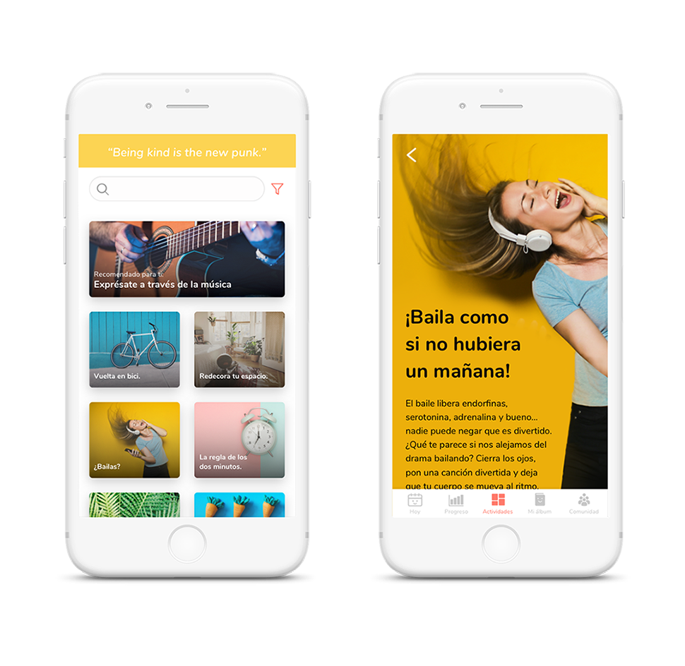
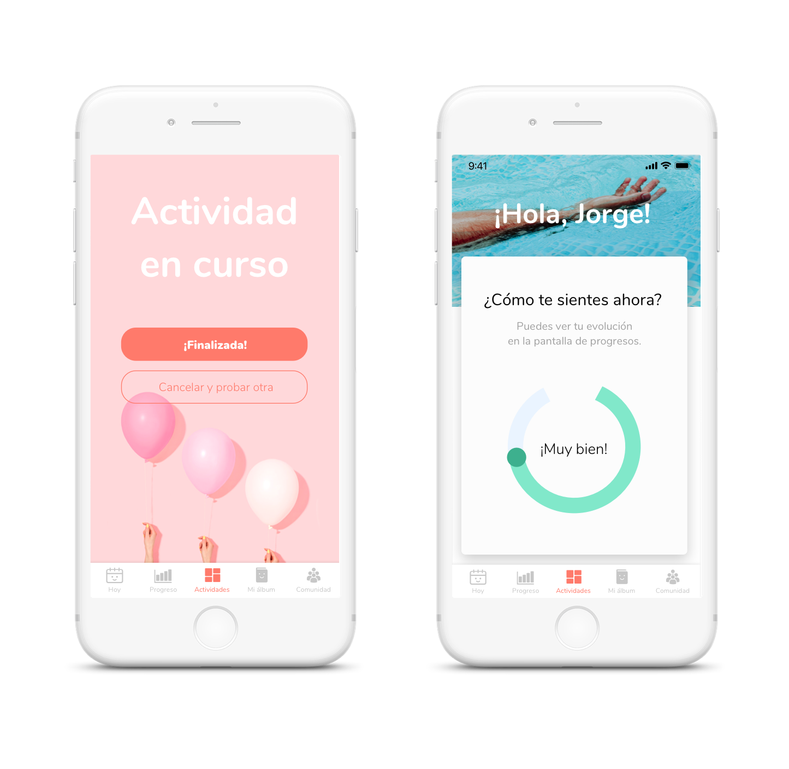

Exhale es una app que parte de la necesidad del público por reducir sus niveles de estrés diarios. Aunque son muchas las aplicaciones que existen actualmente en el mercado, la mayoría se centran en el control del estrés a través de técnicas convencionales de respiración o meditación. Muchas de ellas, además, presentan un visual serio, casi "de consultorio". Sin embargo, un 85% de la población sufre altos niveles de estrés en su vida diaria. Si es un mal tan común, ¿por qué no lo desdramatizamos?
Exhale intenta adoptar un tono más cercano y casual: "Vale, tienes ansiedad. Mucha gente la sufre. Vamos a probar un par de ejercicios que te ayuden a relajarte. Y si puedes divertirte mientras tanto ¡pues mejor!"
Exhale, por tanto, va más allá de las técnicas de relajación convencionales para proponer actividades originales y divertidas, como ejercicio físico, planes al aire libre o actividades creativas. Todo el buscador de actividades se adapta a los filtros que indique el usuario para adaptar las actividades a sus circunstancias del momento (si está solo o acompañado, el tiempo de duración, el espacio en el que se encuentra...).
La selección de actividades está pensada para proponer ejercicios que ayudan al usuario a liberar tensión sin exigirle grandes dosis de concentración para evitar que se frustre o se centre tanto en hacerlo bien que no logre el resultado deseado, como pasa a menudo con la meditación en el caso de principiantes o personas nerviosas.
Una vez el usuario entra en una de las fichas, tiene acceso a una pequeña descripción del ejercicio que incluye información sobre cómo realizarlo así como la explicación de todos los beneficios que le va a reportar.

Tanto al iniciar sesión como al finalizar cada ejercicio, se le solicita al usuario que valore la actividad y acto seguido indique su estado anímico. Así, podremos ver qué clase de actividades funciona mejor para cada perfil y las sugerencias variarán en torno a los datos recopilados.

Además, le permite llevar un seguimiento de la evolución de sus estados de ánimo a lo largo del día y también de forma semanal, mensual y anual. En los También ofrece la posibilidad de encontrar eventos colectivos para generar toda una comunidad.

Otra feature interesante es el “Álbum de momentos”, que insta al usuario a subir cada día una fotografía o nota de algo que le haya hecho sentir bien. De esa forma, generamos en el usuario un punto de vista de su día en el que las protagonistas son las situaciones positivas, lo cual le permite no solo reducir estrés sino también cambiar de perspectiva poco a poco.
Sed quis quam ullamcorper, tincidunt eros vel, malesuada purus. Mauris risus erat, faucibus in aliquam ut, posuere posuere metus. Phasellus eget sem tempus, egestas nisl dapibus, aliquet elit.